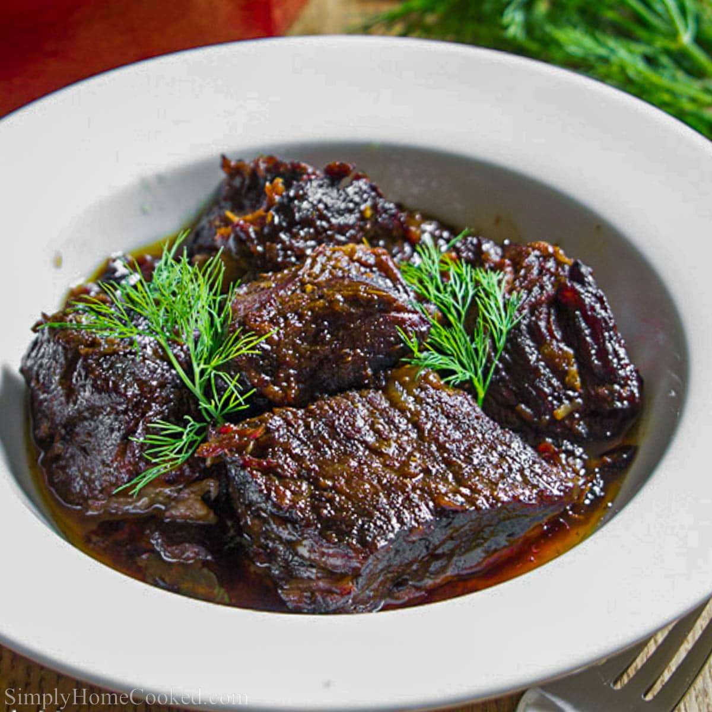

Braising is a cooking method that involves slowly cooking meat in a covered pot with some sort of liquid. In the case of this recipe, chuck roast is braised in a mixture of beef broth and red wine. Braising is similar to stewing, but it requires less liquid.Braising is a cooking method that involves slowly cooking meat in a covered pot with some sort of liquid. In the case of this recipe, chuck roast is braised in a mixture of beef broth and red wine. Braising is similar to stewing, but it requires less liquid.